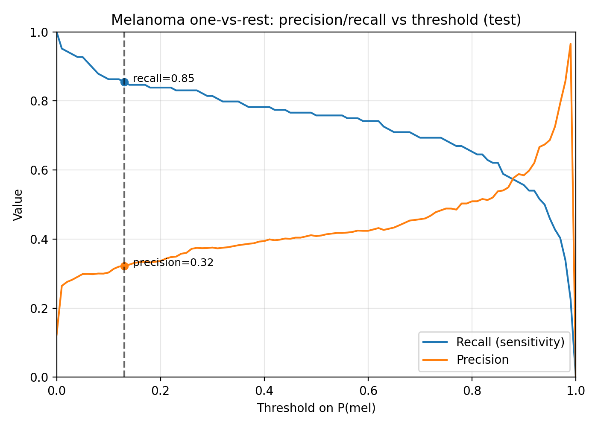
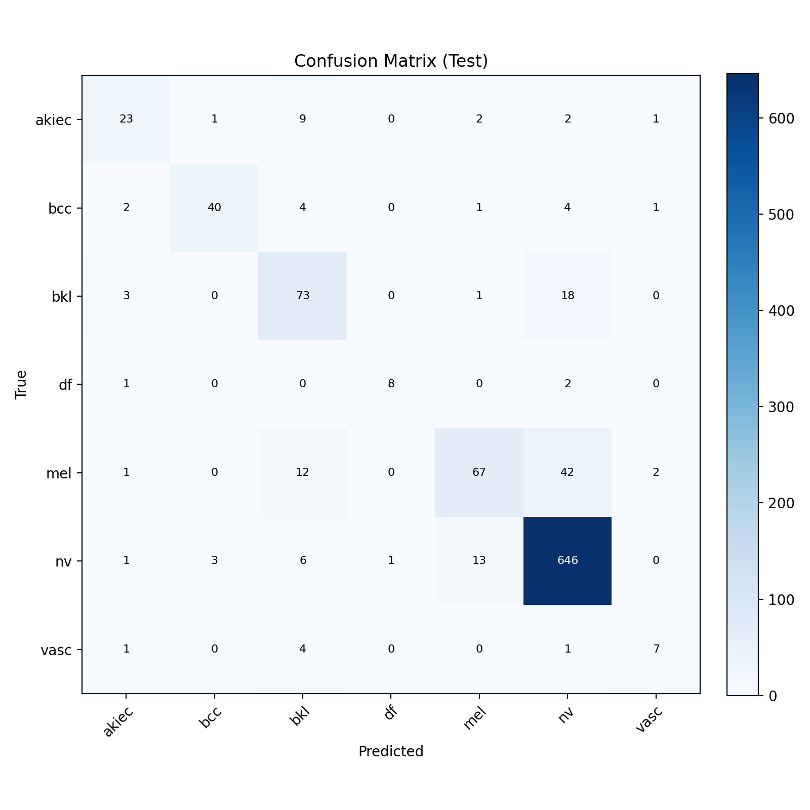
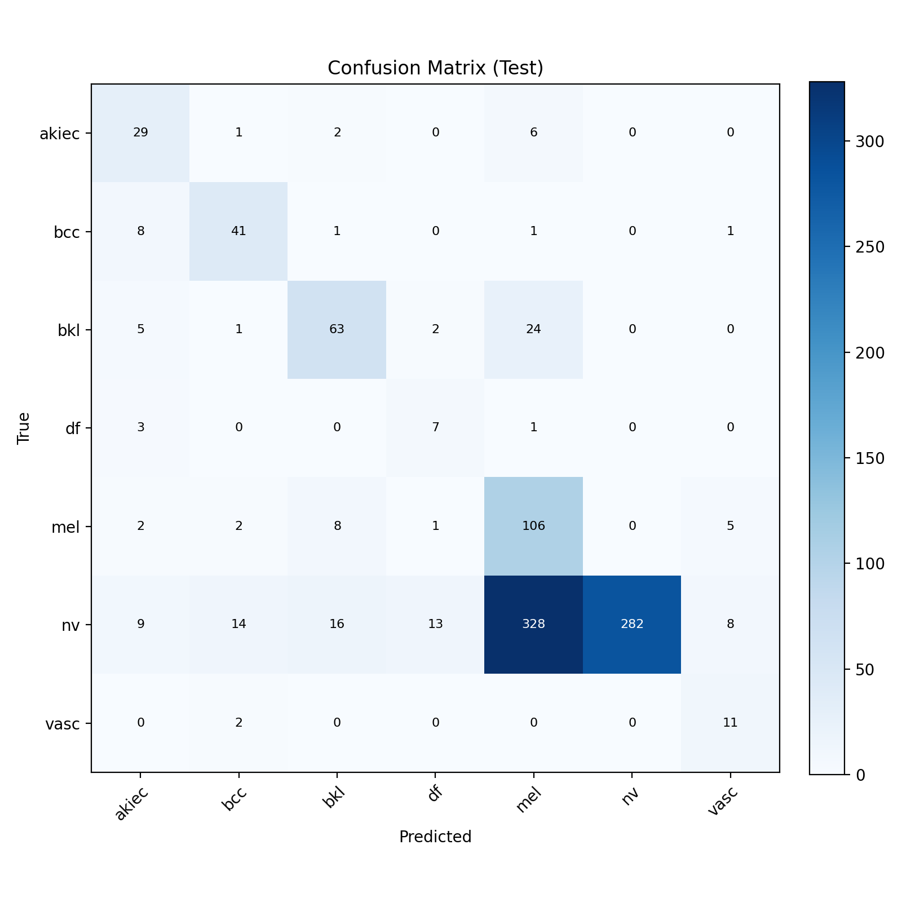
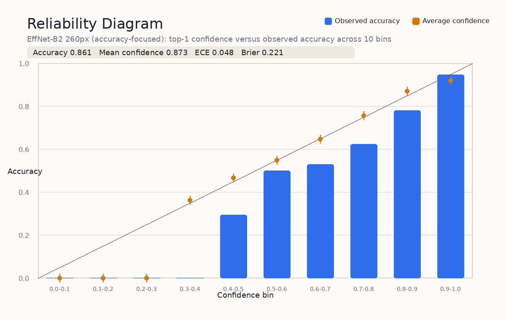
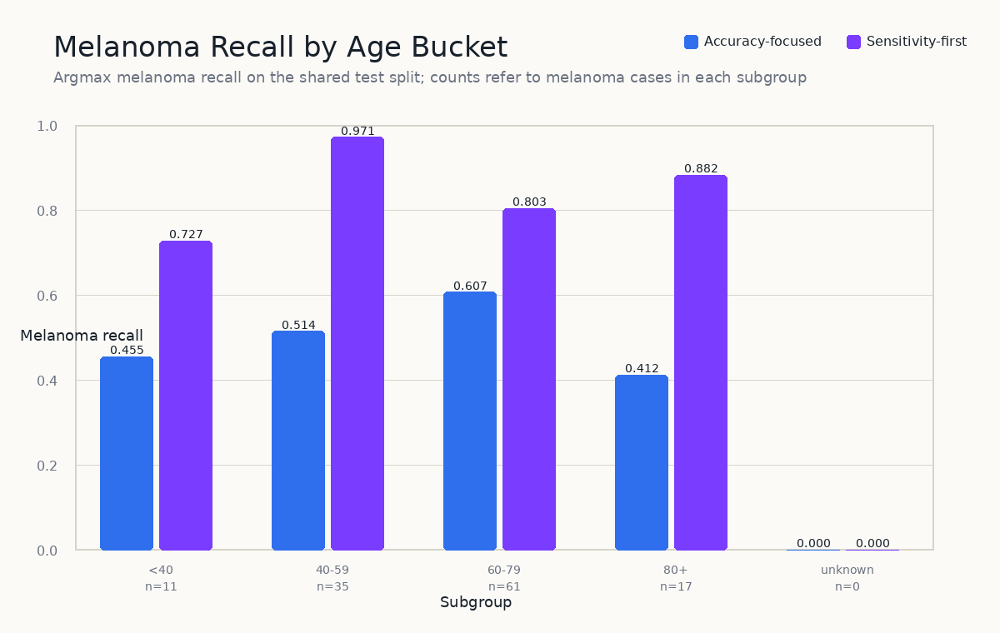

Accuracy-focused classifier
Best for headline multiclass performance and confusion-matrix reporting.
- Accuracy: 0.8614
- Macro-F1: 0.7386
- Melanoma recall: 0.5403
Results page
This page is the static deep-dive companion to the landing page. It keeps the main project website readable while preserving the exact trade-offs that matter for medical-style evaluation.
Compare modes
Best for headline multiclass performance and confusion-matrix reporting.
Best for top-1 melanoma recovery, but no longer a strong general multiclass classifier.
Best for explaining how decision policy can change without retraining the backbone.
Threshold analysis

Interpretation
Threshold analysis is the cleanest way to explain that a clinically sensitive screening mode does not require the same objective as a multiclass leaderboard model. It also makes the false-positive cost explicit instead of burying it in a single top-1 label.
| Setting | Value |
|---|---|
| Threshold | 0.13 |
| Precision | 0.322 |
| Recall | 0.855 |
Figure gallery




Resources